What Is A Force?
A force is a push or pull that can change an object's motion or shape. A force has magnitude and direction, so it is a vector quantity.
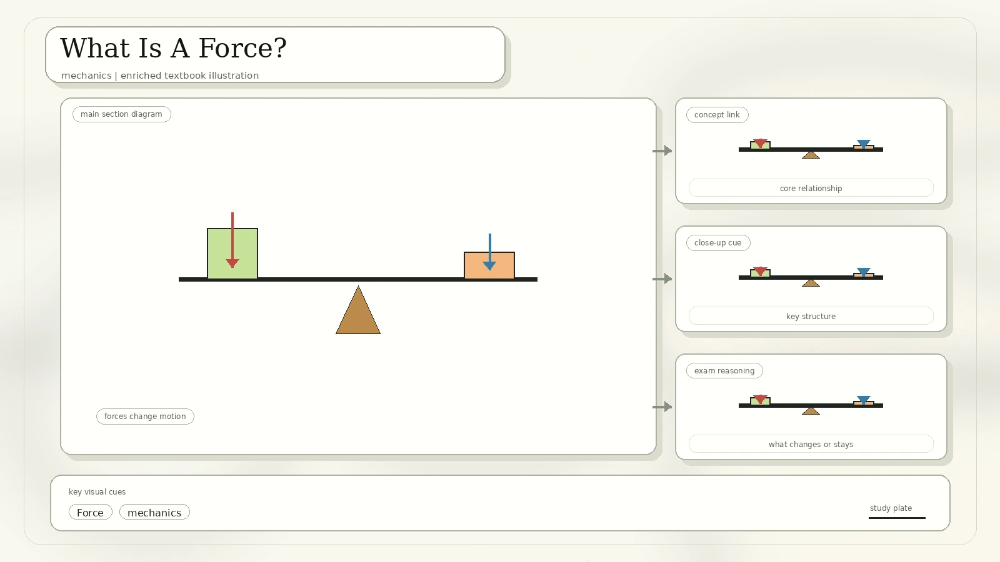
| Contact Forces | Action-At-A-Distance Forces |
|---|---|
| Frictional force, tension force, normal force, air resistance, applied force, spring force. | Gravitational force, electrical force, magnetic force. |
| Require direct contact between objects. | Can act over a distance without objects touching. |
The gravitational force on an object.
A resistive force from a fluid such as air or water.
The support force acting perpendicular to a surface.
A restoring force caused by stretching or compressing an elastic object.
Net Force, Balanced Forces, And Motion
When multiple forces act on an object, the net force is the force left after adding all forces with their directions. The scan also calls this the resultant force.
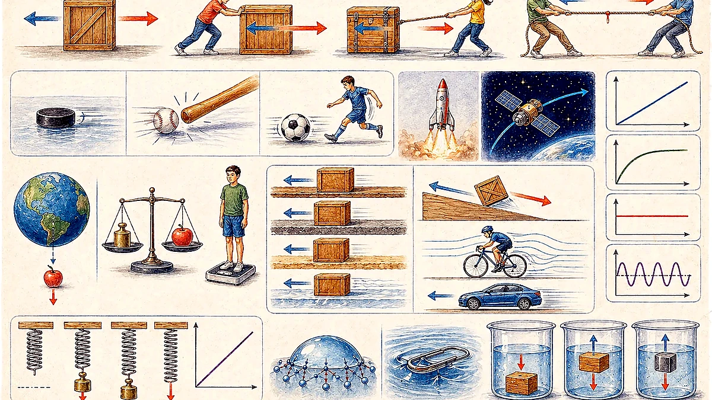
Forces are equal and opposite, so they cancel out. Example: 10 N east plus 10 N west gives a net force of 0 N.
Forces do not cancel. Example: 30 N east plus 10 N west gives a net force of 20 N east.
Equilibrium: if the net force on an object is zero, acceleration is zero. The object is either stationary or moving with constant velocity.
Newton's First Law: Inertia
Objects continue to move with constant velocity unless acted on by an external net force. If no net force acts, an object at rest stays at rest, and a moving object keeps moving at constant speed in a straight line.
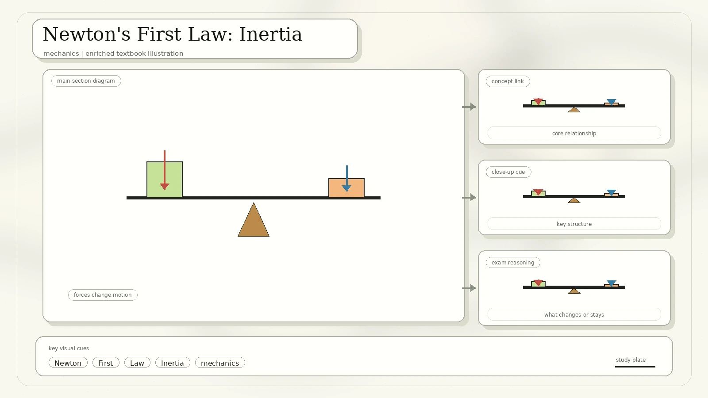
Newton's Second Law
Moving objects accelerate when an unbalanced force acts on them. Stronger force gives greater acceleration; greater mass requires greater force for the same acceleration.
Formula: F = m a. The SI unit for force is the newton, 1 N = 1 kg m/s2.
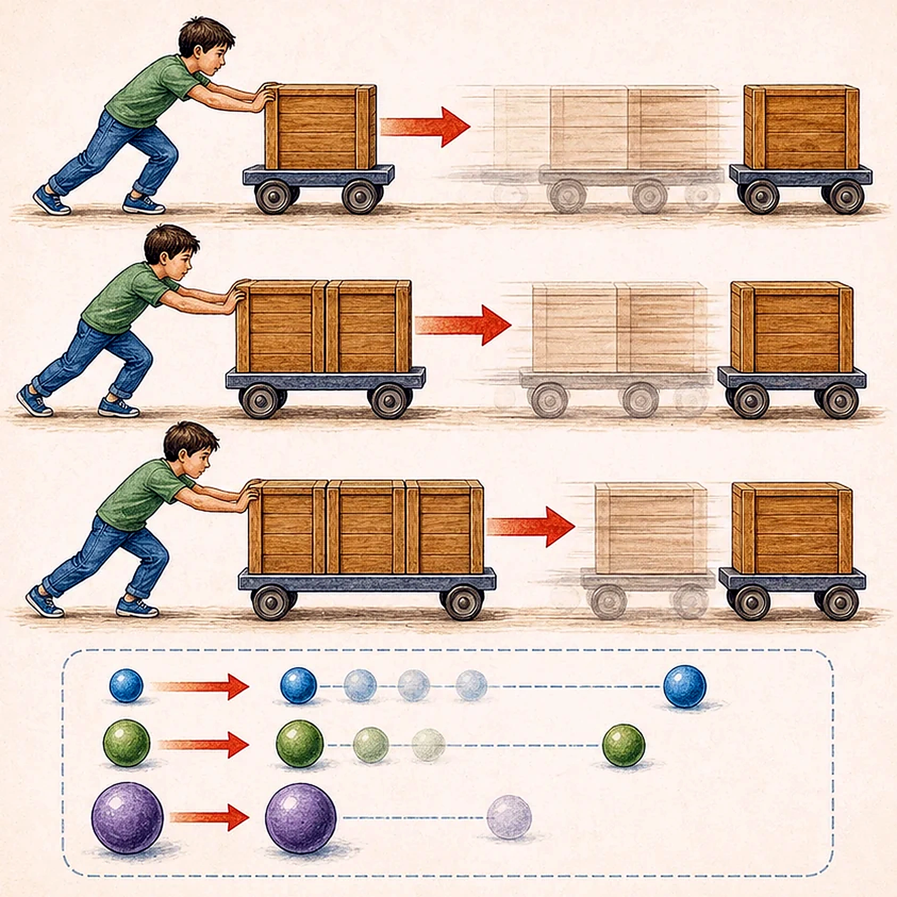
Newton's Third Law And Free-Body Diagrams
Forces always come in pairs. If object A exerts a force on object B, object B exerts an equal and opposite force on object A.
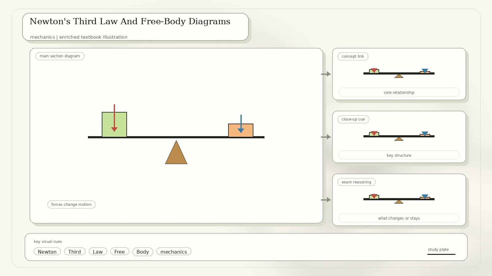
The two forces in an action-reaction pair have equal magnitude.
The forces point in opposite directions.
The forces act on different objects, so they do not cancel as balanced forces on one object.
Mass And Weight
Mass is the amount of matter in an object and does not change with location. Weight is the gravitational force a large body such as a planet exerts on an object.
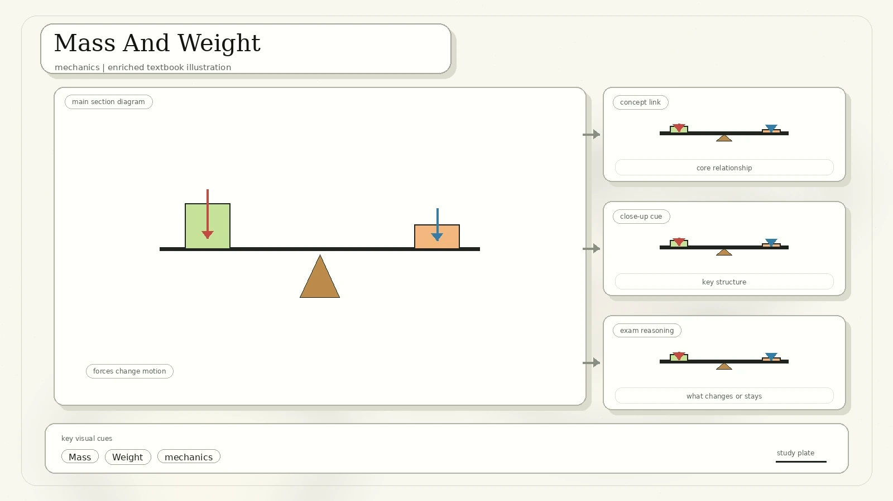
| Mass | Weight |
|---|---|
| Scalar quantity; has magnitude only. | Vector quantity; has magnitude and direction toward the center of the attracting body. |
| Measured in kilograms. | Measured in newtons. |
| Does not change with location. | Depends on gravitational field strength. |
Formula: W = m g, where g is acceleration due to gravity.
Distance, Velocity, And Time Graphs
The scan reviews position-time, distance-time, and velocity-time graphs. The most important graph rule is that area under a velocity-time graph gives distance travelled.
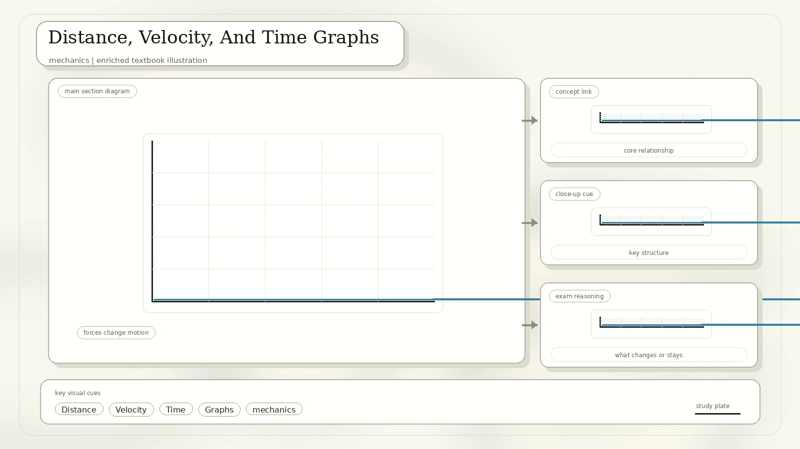
The slope gives speed. A steeper slope means faster motion.
The slope gives acceleration.
Area under the graph gives distance or displacement, depending on the graph context.
Friction
Friction resists motion, causes moving objects to slow down, and produces heat. It acts parallel to the surface and in the opposite direction to relative motion.
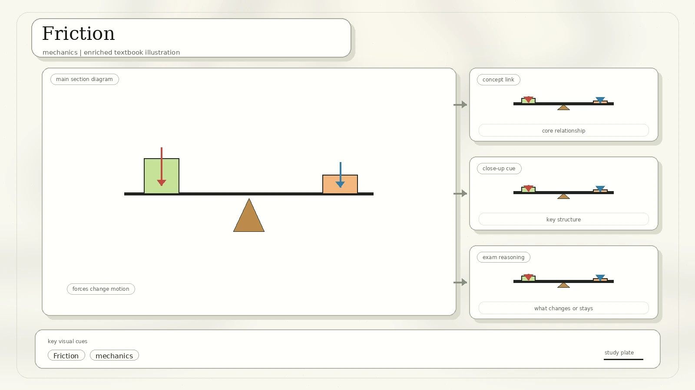
Acts when surfaces are not sliding past each other.
Acts when one surface slides over another.
Acts when one surface rolls over another.
Use lubricants to create a smooth layer between surfaces; sanding or polishing can smooth surfaces.
f = μ FN, where μ is coefficient of friction and FN is normal force.
Spring Force And Hooke's Law
Hooke's law states that the extension or compression of a spring is directly proportional to the force applied, provided the limit of proportionality is not exceeded.
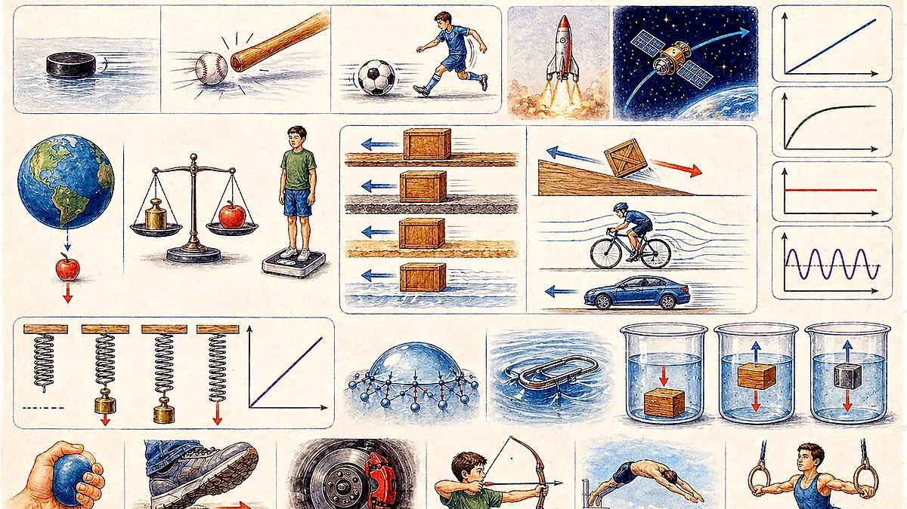
Formula: F = k Δx, where k is spring constant and Δx is extension or compression.
Surface Tension And Capillary Action
Surface tension is the tendency of liquid surfaces to shrink into the minimum surface area possible. At a liquid-air interface, water molecules attract each other more strongly than they attract air.
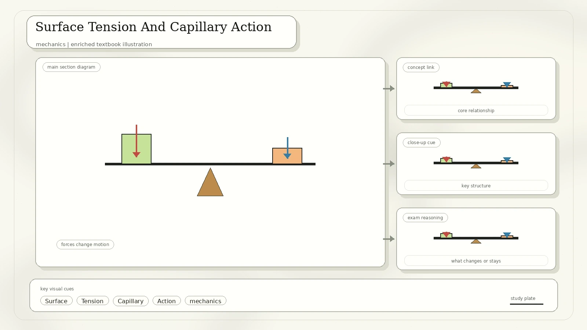
Attraction between molecules of the same substance, such as water molecules attracting one another.
Attraction between different substances, such as water and the glass wall of a tube.
Capillary action: the ability of a liquid to flow in narrow spaces without assistance, or even against gravity, because of intermolecular forces between the liquid and surrounding solid surface.
Water is drawn upward through xylem as transpiration creates a pull and water adheres to tube walls.
Thin spaces in paper absorb liquids by capillary action.
Solvent rises through a thin layer or paper and carries dissolved substances at different rates.
Buoyancy And Archimedes' Principle
The buoyant force on a submerged object is equal to the weight of the fluid displaced by the object. The scan uses water displacement examples to connect buoyancy and density.
- A submerged object displaces a volume of fluid.
- The fluid pushes upward with a buoyant force.
- If buoyant force is greater than weight, the object rises or floats.
- If weight is greater than buoyant force, the object sinks.
- Denser liquids exert greater buoyant force on the same object volume.
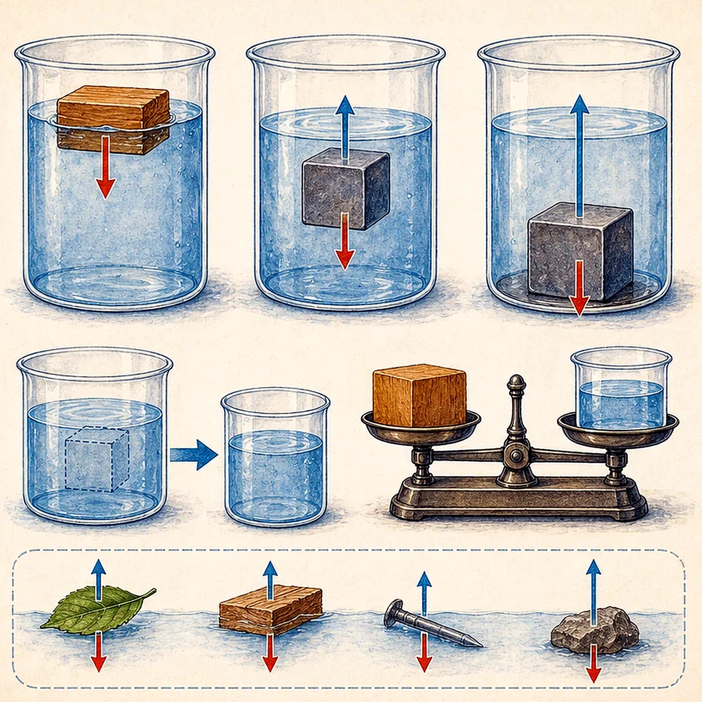
What To Remember
Always include direction when combining forces.
Zero net force means zero acceleration; nonzero net force causes acceleration.
Friction, normal force, spring force, and tension have specific directions.
Surface tension, capillary action, and buoyancy all come from interactions in liquids.